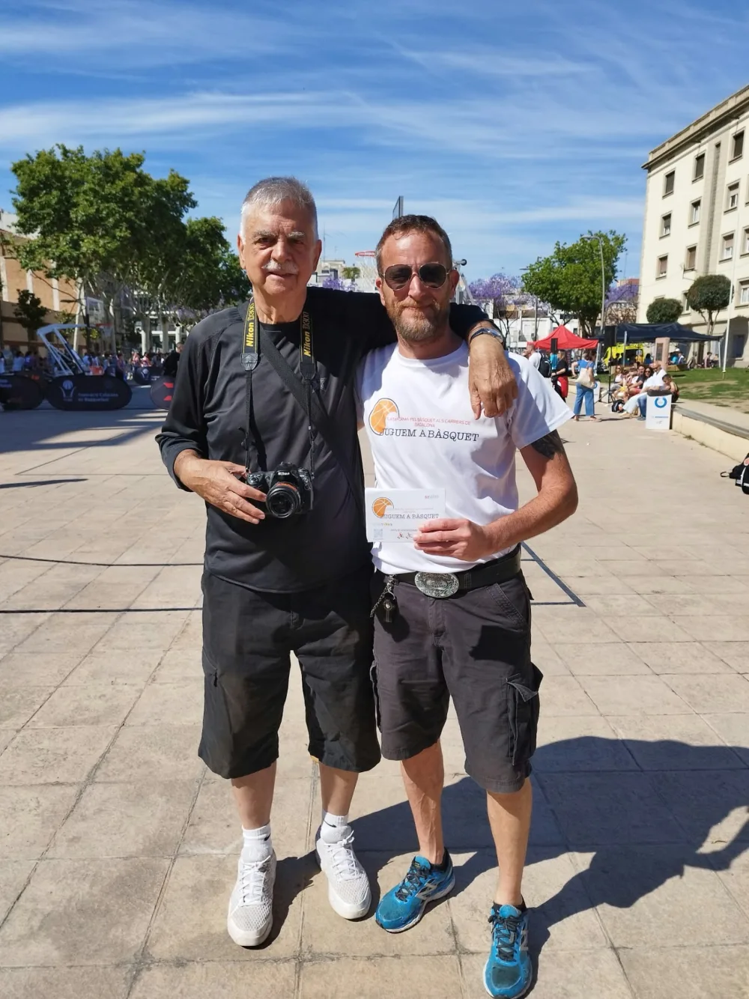

Entrevista · Fotoperiodista i llegenda del bàsquet
Miquel Àngel Forniés
Fotoperiodista · Primer enviat especial espanyol a l'NBA · Cap de premsa de la Penya durant 19 temporades
Miguel Ángel Forniés és un dels fotoperiodistes més reconeguts arreu del món. Als anys 80 es va fer càrrec del Bàsquet Cantaires femení, sent a més a més el primer enviat especial de la premsa espanyola a l'NBA. Anys més tard, va proclamar-se cap de premsa de la Penya durant 19 temporades. Haver entrevistat a Miguel Ángel Forniés és un dels èxits més grans que pot viure la plataforma!
Més fotos

L'entrevista
El bàsquet al carrer sempre ha existit. Durant dos anys vaig treballar per una empresa, CDC Promocions i Consulting, organitzant en els mesos d'estiu uns 3x3 per tota Espanya. El primer any, l'estiu del 1994, van ser quatre mesos sortint cada divendres des de Barcelona i tornant els diumenges a la nit. L'any 1995 es va fer un muntatge més gran, amb pista de competició i graderies. Vaig poder conèixer molts amics i vaig veure la gran afició que hi havia al bàsquet de carrer. Més tard, vaig treballar a la Penya com a cap de premsa i l'empresa va continuar fent els 3x3 amb Reebok com a patrocinador. En canvi, ara, penso que tot s'ha «professionalitzat» amb molts tornejos que organitza tant la FCBQ com la FEB per tot el territori. Per cert, fa poc vaig poder estar al que vosaltres vau organitzar a la pista de Carmelites.
Si presumim que Badalona és el bressol del bàsquet, les autoritats esportives han de donar-li valor a les pistes que tenim per la gran afició existent a la nostra ciutat. Em treu de polleguera quan passejant veig pistes que o els hi falta la xarxa, o inclús la cistella. Per tant, si volem que Badalona sigui realment el BRESSOL DEL BÀSQUET, cal que tots plegats posem una mica de la nostra part. Unes grans pistes atraurien més turisme.
Cada barri hauria de tenir pistes per jugar al carrer. Jo visc a Lloreda i en tenim una que durant l'estiu no paren de venir joves, i no tan joves, a jugar a bàsquet. Un any enrere les pistes del Barri de La Salut van ser un lloc de trobada pels que volien jugar a bàsquet al carrer. Cal afegir que hi ha col·legis amb un manteniment pèssim. Penso que és imprescindible un bon manteniment i, a més a més, estaria bé poder fer un llistat de les pistes que tenim i potenciar-les. Davant de l'Olímpic mateix, a la Plaça Joan Miró, hi ha tres o quatre cistelles que la Penya hauria d'aprofitar ja que estan prop de l'Olímpic i així donar més vida, com per exemple pintant l'escut o les zones del voltant. Aprofito per dir que aquesta idea me la vau mencionar vosaltres.
Tenim un BBB que és la unió de 12 equips de la nostra ciutat; part de la responsabilitat que les pistes estiguin en condicions lamentables és també seva, no només de la Penya, que forma part de la Badalona Bàsquet Base. Per això penso que una bona idea seria que cada equip organitzés un 3x3, com fan alguns des de fa temps.
Òbviament, les millors pistes al carrer les he trobat als Estats Units, pistes com cal amb molta activitat; sempre que m'acostava a alguna em quedava mirant aquell grup de joves que amb la seva ràdio cassette passaven hores i hores jugant a bàsquet, menjant entremig una burger i una coca-cola. França i Alemanya també tenen bones pistes al carrer. L'any 1995 dins del 3x3 de Buckler Challenge vam anar a Agde i Cap d'Agde a França. Va ser un cap de setmana acollonant amb molt bon ambient i molts jugadors. Jo, amb la meva càmera, gaudia del show i espectacle dels jugadors, alguns molt espectaculars.
Mira, el primer any que vaig anar als Estats Units, l'estiu de 1977, vaig anar a Virgínia convidat per Dave Stowers, un jugador blanc nord-americà de 2 metres, que havia jugat a Màlaga amb el Miraflores de Los Àngeles. Vaig estar una setmana a casa seva a Chester, Virgínia. Cada tarda anàvem a unes pistes plenes de jugadors de color; Dave era molt respectat, ja que havia fet molt bones temporades a Stetson University, a Florida. Els guanyava sempre, i em va proposar jugar amb ell, jo no m'ho creia, va ser una experiència collonuda. Passant amb el cotxe camí a casa seva hi havia una casa gran amb un jugador enorme assegut a la terrassa; li vaig preguntar al Dave qui era, i em va dir: «un crac de l'NBA, Moses Malone». Després el vaig poder fotografiar jugant amb els Sixers i els Washington Bullets.